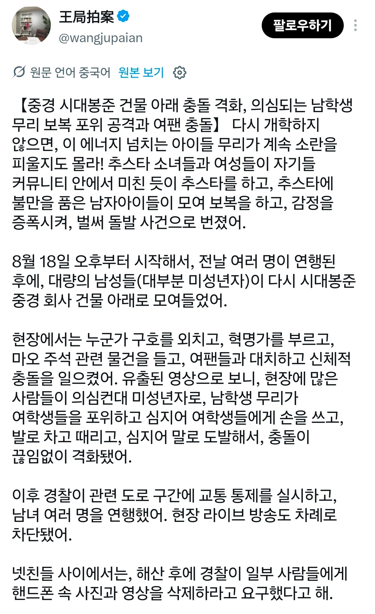

시대봉준(중국판 빅히트 엔터테인먼트) 건물 아래에서 무슨 이유인지 모르겠지만 남녀 팬덤간 싸움이 발생했는데
잡아갈때 남자만 잡아간다고 역차별 논란 발생
결국 다음날 또 충돌이 생겼는데 여자들 빠꾸없이 패버림
현지 공안은 미성년자 추정 남녀들 구분없이 다수 연행, 현장 라이브 중단

시대봉준(중국판 빅히트 엔터테인먼트) 건물 아래에서 무슨 이유인지 모르겠지만 남녀 팬덤간 싸움이 발생했는데
잡아갈때 남자만 잡아간다고 역차별 논란 발생
결국 다음날 또 충돌이 생겼는데 여자들 빠꾸없이 패버림
현지 공안은 미성년자 추정 남녀들 구분없이 다수 연행, 현장 라이브 중단
댓글
수집 당시 댓글 3개
봄동비빔밥 · 23 시간 전
ㅋㅋ 남녀갈등은 차별이 없구만 대세야
무슈슈 · 23 시간 전
일본 철도 덕후들 그 특유의 에겐스러운 목소리랑 존똑
빠기잉 · 22 시간 전
이게 워터밤인가 그건가